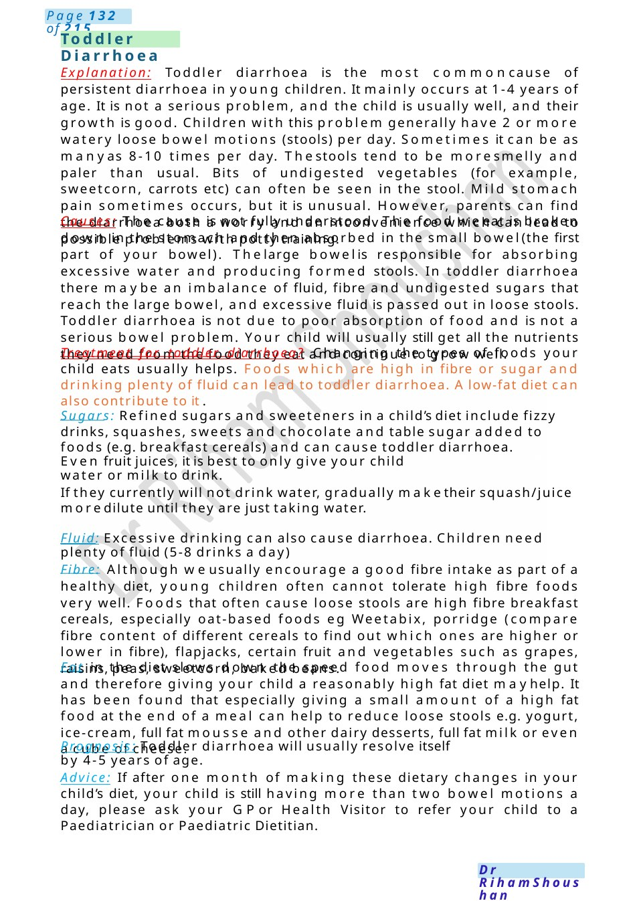

Fussy Eater
Either constipation or functional constipation to mother or medical student Definition: Infrequent bowel evacuation of hard faeces or difficult/painful defecation for ≥1 month. If mother (draw the colon and describe that normally the food passing through the gut tubes smoothly by the help of the muscle contractions to push the stool outside, in some kids they ignore the urge to go to bathroom, do not drink enough fluids or eat a balanced diet which make the stool to be hard and difficult to be pushed outside).
Scenario Summary
Either constipation or functional constipation to mother or medical student Definition: Infrequent bowel evacuation of hard faeces or difficult/painful defecation for ≥1 month. If mother (draw the colon and describe that normally the food passing through the gut tubes smoothly by the help of the muscle contractions to push the stool outside, in some kids they ignore the urge to go to bathroom, do not drink enough fluids or eat a balanced diet which make the stool to be hard and difficult to be pushed outside).
Full Original Scenario

Constipation
Fussy Eater
Either constipation or functional constipation to mother or medical student
Definition: Infrequent bowel evacuation of hard faeces or difficult/painful defecation for ≥1 month. If mother (draw the colon and describe that normally the food passing through the gut tubes smoothly by the help of the muscle contractions to push the stool outside, in some kids they ignore the urge to go to bathroom, do not drink enough fluids or eat a balanced diet which make the stool to be hard and difficult to be pushed outside).
Causes: Either functional which is 90 %of cases, other organic causes like hypothyroidism, hypokalaemia, hypomagnesemia, Hirschsprung disease, celiac, neurogenic causes or anatomical abnormalities.
Investigations: Usually, noneed for investigations unless in somecases: thyroid function tests, coeliac panel, If delayed passage of meconium: sweat test.
Management: lifestyle modification, dietary management (increase fibres, fluids, fruits) increase activity, behaviour changes with regular toilet after meals for 5 minutes with correction of position on the toilet with leaning forward &put the feet on the floor. give the child rewards. Dis impaction with Movicol oral gradually increase the Sach till the maximum then give the have amount and continue for 4_ 6 maintenances with aim to maintain loose soft stool daily.
Team: dietician, gastroenterologist.
Reassurance: I can understand it is difficult but let mereassure you, he is within normal for weight and height. This is considered normal behaviour for his age, he is demanding on attention, he may show signs of independence, he mayneed to act like other kids in home.
Treatment: all the family should eat together, eat healthy food and eat away from distraction like cell phones. youshould take noas an answer, whenhe tells youthat he is not hungry, youshould not force him to eat, also you should quite clean plate policy and do not make food time unpleased for him, trying to talk together during mealtime about pleasant events .
We have to limit the milk intake, the milk is very nutrient, but his stomach is small and if he got a lot of milk he will fill his tummyand will be noroomfor his food, samerule applied to juice andsquashes and do not give him candies as a reward but you may take him to his favourite friend, star chart or take him to sport club.
You have to make his food attractive by using coloured plates and spoons, using different recipes from same food and I will give you some useful pages from which wecan learn how to make food looks very good.
Advice: if he has constipation, his weight not increasing at this time you can seek medical advice.

Toddler Diarrhoea
Explanation: Toddler diarrhoea is the most commoncause of persistent diarrhoea in young children. It mainly occurs at 1-4 years of age. It is not a serious problem, and the child is usually well, and their growth is good. Children with this problem generally have 2 or more watery loose bowel motions (stools) per day. Sometimes it can be as manyas 8-10 times per day. Thestools tend to be moresmelly and paler than usual. Bits of undigested vegetables (for example, sweetcorn, carrots etc) can often be seen in the stool. Mild stomach pain sometimes occurs, but it is unusual. However, parents can find the diarrhoea both a worry and an inconvenience which can lead to possible problems with potty training.
Causes: The cause is not fully understood. The food weeat is broken down in the stomach and then absorbed in the small bowel(the first part of your bowel). Thelarge bowelis responsible for absorbing excessive water and producing formed stools. In toddler diarrhoea there maybe an imbalance of fluid, fibre and undigested sugars that reach the large bowel, and excessive fluid is passed out in loose stools. Toddler diarrhoea is not due to poor absorption of food and is not a serious bowel problem. Your child will usually still get all the nutrients they need from the food they eat and continue to grow well.
Treatment for toddler diarrhoea? Changing the types of foods your child eats usually helps. Foods which are high in fibre or sugar and drinking plenty of fluid can lead to toddler diarrhoea. Alow-fat diet can also contribute to it .
Sugars: Refined sugars and sweeteners in a child’s diet include fizzy drinks, squashes, sweets and chocolate and table sugar added to foods (e.g. breakfast cereals) and can cause toddler diarrhoea.
Even fruit juices, it is best to only give your child water or milk to drink.
If they currently will not drink water, gradually maketheir squash/juice moredilute until they are just taking water.
Fluid: Excessive drinking can also cause diarrhoea. Children need plenty of fluid (5-8 drinks a day)
Fibre: Although weusually encourage a good fibre intake as part of a healthy diet, young children often cannot tolerate high fibre foods very well. Foods that often cause loose stools are high fibre breakfast cereals, especially oat-based foods eg Weetabix, porridge (compare fibre content of different cereals to find out which ones are higher or lower in fibre), flapjacks, certain fruit and vegetables such as grapes, raisins, peas, sweetcorn, baked beans.
Fat in the diet slows down the speed food moves through the gut and therefore giving your child a reasonably high fat diet mayhelp. It has been found that especially giving a small amount of a high fat food at the end of a meal can help to reduce loose stools e.g. yogurt, ice-cream, full fat mousse and other dairy desserts, full fat milk or even a cube of cheese.
Prognosis: Toddler diarrhoea will usually resolve itself by 4-5 years of age.
Advice: If after one month of making these dietary changes in your child’s diet, your child is still having more than two bowel motions a day, please ask your GPor Health Visitor to refer your child to a Paediatrician or Paediatric Dietitian.